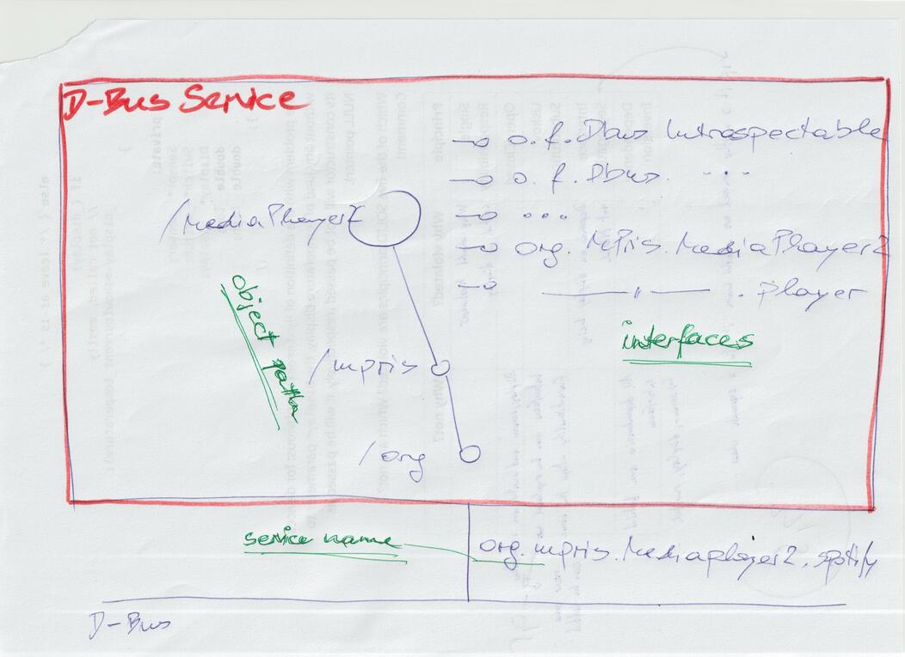
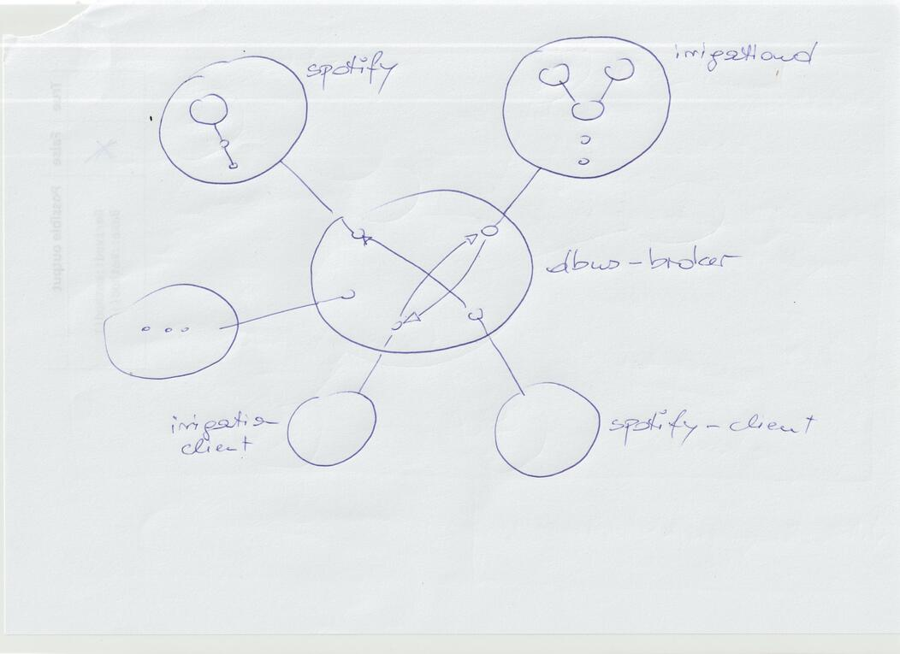
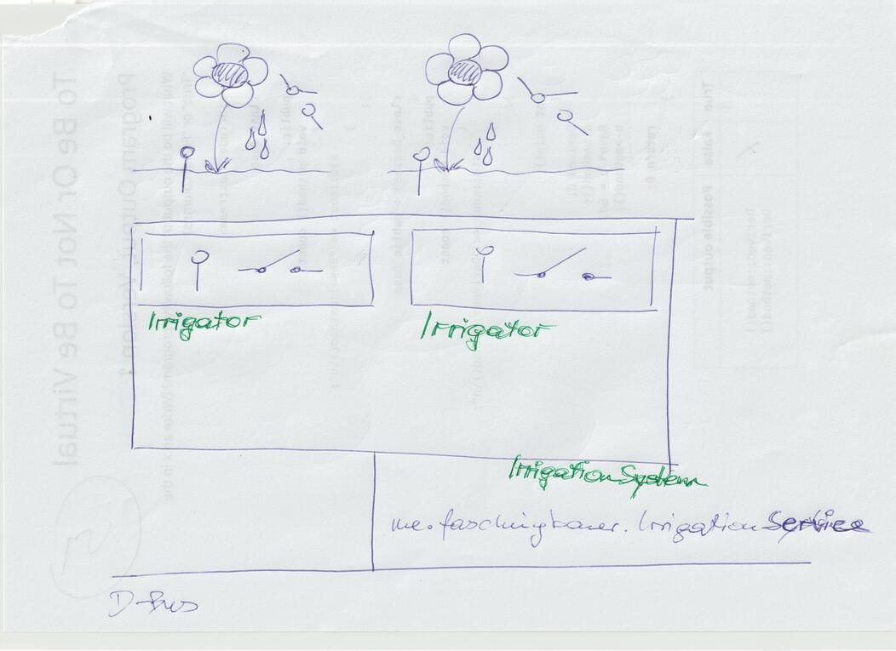

Slides: systemd’s D-Bus Implementation, And Its Python asyncio Binding#
TL;DR#
Lennart Poettering’s blog post about D-Bus and Lennart’s baby, sdbus: https://0pointer.net/blog/the-new-sd-bus-api-of-systemd.html
sdbus’s Python binding: https://python-sdbus.readthedocs.io
… and programming; e.g. jfasch/jf-irrigation
Show#
How does Spotify react on
Next/Prevbuttons? ⟶ D-Busd-feet: on session/user bus, search “spotify”, and examine object ⟶ callSame with
busctl⟶ wonderful commandline completion!$ busctl --user list | grep spotify $ busctl --user tree org.mpris.MediaPlayer2.spotify $ busctl --user call org.mpris.MediaPlayer2.spotify /org/mpris/MediaPlayer2 org.mpris.MediaPlayer2.Player Pause
A Big Picture#
 {kind=link}
{kind=link}
Sample Client (sdbus, Blocking)#
Simple main program ⟶ blocking
#!/usr/bin/env python3 from mpris import MPRISPlayer, MPRISApp import sdbus spotify_player_client = MPRISPlayer( bus = sdbus.sd_bus_open_user(), service_name = 'org.mpris.MediaPlayer2.spotify', object_path = '/org/mpris/MediaPlayer2') spotify_player_client.PlayPause()
Show
straceoutput on it. Explainppoll()usage (dispatching only one event) on non-blocking file descriptor ⟶ Blocking
Defining Interfaces, Pythonically#
Interface definition (
MPRISPlayer)from sdbus import DbusInterfaceCommon, dbus_method class MPRISPlayer(DbusInterfaceCommon, interface_name='org.mpris.MediaPlayer2.Player'): @dbus_method() def PlayPause(self): raise NotImplementedError class MPRISApp(DbusInterfaceCommon, interface_name='org.mpris.MediaPlayer2'): @dbus_method() def Quit(self): raise NotImplementedError
Quit Spotify (now via
MPRISApp)snippet-spotify-quit#spotify_app_client = MPRISApp( bus = sdbus.sd_bus_open_user(), service_name = 'org.mpris.MediaPlayer2.spotify', object_path = '/org/mpris/MediaPlayer2') spotify_app_client.Quit()
History/Implementations/Bindings ⟶ sdbus#
Original/reference implementation (
libdbus): https://www.freedesktop.org/wiki/Software/dbus/GNOME/GLib/GIO implementation: https://gnome.pages.gitlab.gnome.org/libsoup/gio/gdbus-convenience.html
systemd implementation (
sdbus): https://0pointer.net/blog/the-new-sd-bus-api-of-systemd.html… some more …
Language bindings available for all languages and all implementations ⟶ confusion
For Python,
dbus-python: deprecated; useslibdbus(https://dbus.freedesktop.org/doc/dbus-python/)pydbus: uses GLib/GIO (https://pydbus.readthedocs.io)python-sdbus: usessdbus; both blocking and async (https://python-sdbus.readthedocs.io)
Concrete Use Case: jf-irrigation#

{kind=link}
Local objects
Entire irrigation system, containing irrigators
Irrigators: sensor/switch pairs, giving water when moisture low
Show config
$ ./bin/irrigation-local.py --conf configs/tomatoes-beans-file-stubs.conf
⟶ adaptation into D-Bus
Irrigation Client: Enter asyncio#
Show irrigation/dbus_interfaces.py ⟶ async
Need to duplicate definition to create blocking client ⟶ No! async is better anyway
First Step: Create Proxy#
#!/usr/bin/env python3
from irrigation.dbus_interfaces import DBusIrrigationSystem, DBusIrrigator
import sdbus
import asyncio
irrigation_system = DBusIrrigationSystem.new_proxy(
bus = sdbus.sd_bus_open_user(),
service_name = 'me.faschingbauer.IrrigationService',
object_path = '/me/faschingbauer/IrrigationSystem')
Naive try: Use Async Definition To Block#
Fix: Async Machinery#
Blah event loop blah
⟶
straceoutput below
Create Irrigator Proxies#
irrigators = {}
async def main():
names = await irrigation_system.GetIrrigatorNames()
for name in names:
irrigators[name] = DBusIrrigator.new_proxy(
bus = sdbus.sd_bus_open_user(),
service_name = 'me.faschingbauer.IrrigationService',
object_path = f'/me/faschingbauer/IrrigationSystem/{name}')
pprint(irrigators) # <-- more info wanted
Print Statistics#
while True:
for name, irrigator in irrigators.items():
name = await irrigator.Name
low = await irrigator.Low
high = await irrigator.High
moisture_value = await irrigator.MoistureValue
switch_state = await irrigator.SwitchState
print(f'name {name}: low {low}, high {high}, moisture_value {moisture_value}, switch_state {switch_state}')
await asyncio.sleep(1)
D-Bus Signals#
D-Bus Signals: events emitted from D-Bus objects
⟶ opposite of method call or property read
⟶ Pythonically, this can only be
async forReplace one client “task” (printing irrigator properties) with another (waiting for signals)
And Parallelism?#
async def status_loop(),report_switches_changed()async def status_loop(): while True: for name, irrigator in irrigators.items(): name = await irrigator.Name low = await irrigator.Low high = await irrigator.High moisture_value = await irrigator.MoistureValue switch_state = await irrigator.SwitchState print(f'name {name}: low {low}, high {high}, moisture_value {moisture_value}, switch_state {switch_state}') await asyncio.sleep(1) async def report_switches_changed(): async for event in irrigation_system.SwitchStateChanged: print(event)
Introduce asyncio.TaskGroup#
Keep In Mind …#
D-Bus calls (method calls, signals, and property access) are expensive
tons of context switches until a call is back ⟶ picture from earlier
low,high, sensor value, and switch state ofDBusIrrigatorshould better be exposed as D-Bus struct type property with those members(maybe hack that)
Local irrigation system knows nothing about
async.It might implement a switch change as callback
… a small local-to-dbus trampoline sends the signal away
Not trivial: non-async functions cannot call async directly. Possibilities:
Local callback enqueues towards a “signal emitter task” (which is entirely async, obviously)
Avoid callbacks in local system (show
DBusIrrigationSystem.SwitchStateChanged, andbin/irrigationd.py)
All in all
D-Bus objects/interfaces should mimic local ones as much as possible
But no closer
What else?
Show
dbus-monitor